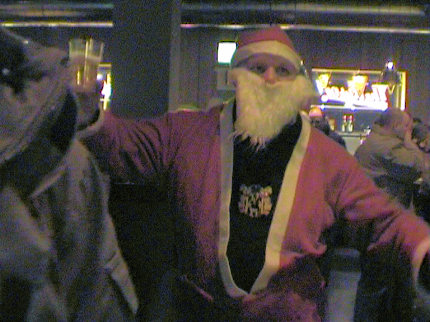

|
Roda JC - Feyenoord (1-0) 21 december 2005
|
Overdreven veiligheidsmaatregelen rond het PLS.
Er was een confrontatie op handen tussen supportersgroepen van beide
clubs (terwijl Feyenoord een verplichte vervoersregeling had) waarbij de
ME tijdig ingreep. Roda's hardcore supporters marcheren hier onder de
bekende begeleiding naar het stadion.
Toch nog een bijna uitverkocht gastenvak, ca. 850 Feyenoordfans.
Feyenoord opende sterk en toonde veel meer individuele klasse. Roda JC
verdedigde massaal en kon het eerste halfuur alleen acheruit spelen.
Schwalbenheini Boussabon wordt niet bestraft door scheidsrechter Jol.
Sergio kruipt voor Bahia en schiet de voorzet van Cissé op maat, keihard
binnen: 1-0, (31').
Blijde mensen.
Een doelpunt van Sergio en een flinke buidel chips: een top-avond voor de
drie paalmeiden van Z16.
Vrije trap Paauwe. Zijn harde schot gaat precies door het midden en kan
gemakkelijk gestopt worden door Kujovic.
Kujovic maakt wederom een vrije trap onschadelijk.
Nadat Cissé in de 80e min. is vervangen door Cristiano krijgt Roda nog een
paar leuke kansen. Hier wordt Sergio door twee Feyenoorders gemangeld.
In de 90e min. wordt Sergio vervangen door Sonko.
Superkans voor Sergio om de wedstrijd te beslissen maar zijn rollertje vormt
geen probleem voor doelman Lodewijks.
In de 93e min. is er een mooi een-tweetje tussen Cristiano en Oper die de
bal eveneens te zacht inschiet om Lodewijks te verrassen.
Eindelijk fluit Jol af en is Feyenoord dankzij de enorme vechtlust van Roda
uit de beker gestoten.

Toch nog wat vuurwerk van Feyenoord-zijde.
Ja, tegen MVV bijvoorbeeld!
Goede opvoeding....
Weinig publiek, maar veel sfeer op de tribunes.

Het was nog lang druk en gezellig in de Kickoff met o.a. kerstman John.

Tapjuf had het druk.

Diego Jongen en Gregoor van Dijk bezochten het home.

Flashgirl heeft weer een nieuwe telefoon!

Rodagirl
Uschi maakt een foto van haar laatste klanten.
Foto's van Feyenoord-zijde:
Ego2.nl::Feyenoord Foto Fansite
© Koempels Pleasure Dome
|